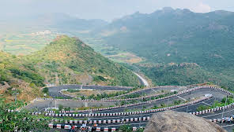

Kondaveedu Fort
Kondaveedu Fort is a historical hill fortress located in the Guntur district of Andhra Pradesh, India. It is known for its rich history and stunning views.
Location: Kondaveedu, Guntur, Andhra Pradesh, India
Ticket Price: Free entry
Transportation: Accessible by road, located approximately 25 km from Guntur city.